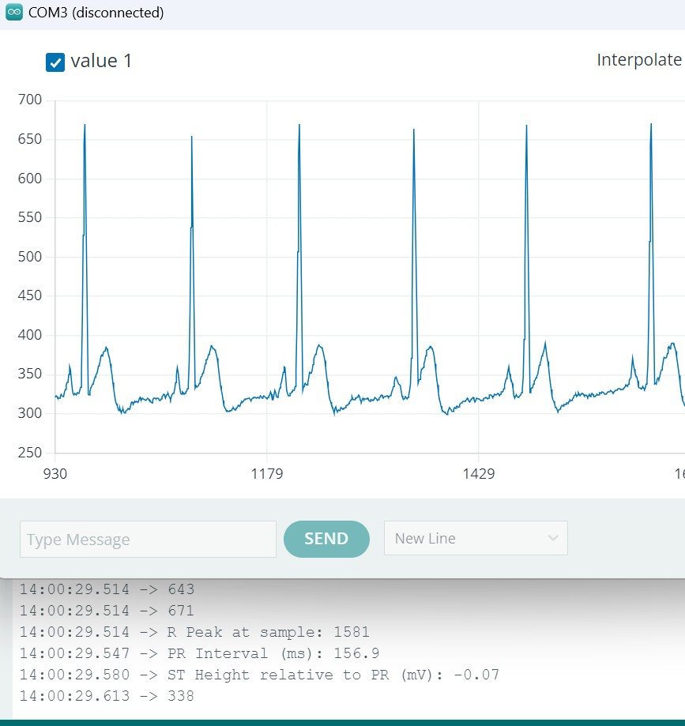
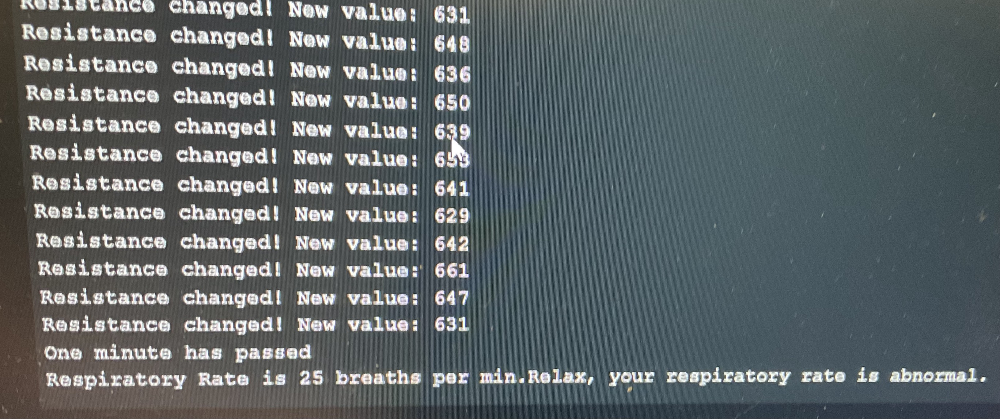
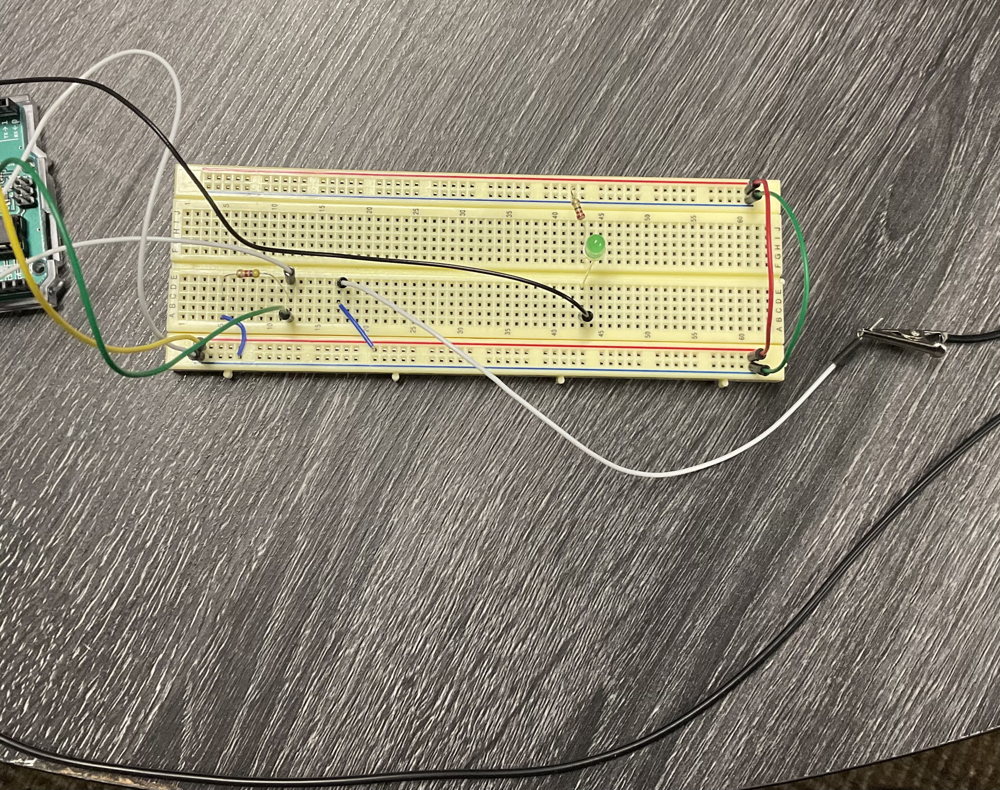

The demo displays the ECG Signal Processing, Respiratory Monitoring, Blood Pressure Monitoring, and Fall Detection subsystems.
To acquire the ECG signals, three copper tape nodes will go through an AD8232, where it will then go to the ESP32 microcontroller to analyze the signal. Both the PR segment legnth and ST segment height will be measured. Here is a demo of the ECG subsystem.Here displayed is the output for the ECG Signal Processing subsystem. As shown, the results indicate normal cardiac activity.
A rubber cord was put into a voltage divider circuit in place of one of the resistors allowing the detection of the change in resistance of the cord. When the program is run, a 60 sec timer is started. Then the resistance of the rubber core is read and the timer is checked to see if a min has passed. If a min has not passed it checks to see if the change in resistance is greater than the threshold, if so, then the respiratory rate value is incremented. When the timer is up the respiratory rate value is divided by to to account for the rising and falling motions of breathing to find the true respiratory rate. If the respiratory rate value is too high or too low a warning is given. Below is the circuit used as well as the output when testing.
 The blood pressure monitoring uses a SEN0203 Heart rate sensor. Traditionally blood pressure is taken using a pump and cuff with a pressure gauge (mmHg) and a stethoscope to listen for a heart beat. For this system, the SEN0203 heart rate sensor replaces the need for a stethoscope. First the user inflates the cuff with the the pump and has the sensor on their arm where the stethoscope would go. Once the cuff is fully pressurized, the user will slowly release pressure from the cuff. Once the sensor first picks up a hear beat, it will let the user know so that they can record their systolic pressure. They will continue to deflate the cuff until the sensor stops picking up a heart beat. At this point the user records their diastolic pressure. These two numbers together give the user their blood pressure. Below is a video demo of the subsystem in use.
The fall detection subsystem helps monitor and verify when a user suffers from a fall. We chose to include this subsystem because our target demographic are mainly senior citizens with heart conditions. This group is more susceptible to fall, and the outcome can be quite serious. Since maintaining user wellbeing is our priority, the system works with a confirmation window after detecting a fall. If the user fails to respond in a timely fashion, an alert will be sent to signal that assistance may be needed. This confirmation also helps to filter out false flags, and maintain accuracy. Below is a short video to help provide a rough overlook at the system.